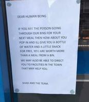

0


AleRunner writes: "Solar has been doing the 'heavy lifting' to help Europe meet its energy needs amid a string of blistering heatwaves," Euronews tells us. Meanwhile, as Europe's energy demands rise with the heat, jellyfish have been causing shutdowns and reduced power output at multiple reactors at French nuclear plants, as we already discussed. Euronews reports: A new analysis from energy think-tank Ember found that solar output in European countries rose by up to 17 percent on heatwave days in June and July. Researchers say that this helped power the grid as electricity demand increased by as much as a quarter on hot days. Heatwaves often trigger a spike in electricity consumption due to the sudden need for cooling, mainly from energy-intensive air conditioning (A/C) units.
The International Energy Agency (IEA) estimates that space cooling, which is mostly A/C units and fans, consumed around seven percent of the world's electricity in 2022. Even in countries where A/C ownership is low, countries experience energy demand spikes when scorching temperatures hit. During the early summer heatwaves of 2025, France, for example, recorded an evening electricity peak that was 25 percent above the off-season average due to air conditioning.
Ember's analysis found that during the late-June heatwave this summer, daily electricity demand rose byup to 28 percent in Italy, 23 percent in Hungary, 14 percent in France and 13 percent in Spain compared with pre-heatwave days. It says as heatwave-driven demand increased, solar was the only major power source to perform "better than usual." Compared with other days in June and July, average daily solar generation during the heatwaves was 17 percent higher in France and Hungary, five percent higher in Spain and the same in Italy.
Read more of this story at Slashdot.
District Court Judge Eric Elliff has ordered Iron Mountain to cooperate with Nine PBS in recovering roughly 50TB of archival material stored through now-defunct vendor OSS. "He found that the station is the rightful owner of the materials and entitled to recover them from OSS' storage systems," reports Current.org. Nine PBS must identify a third party to help retrieve the files, pay outstanding storage fees, and ensure that data belonging to other OSS customers isn't disturbed or accidentally recovered. From the report: Under his order, Nine PBS is to identify a third-party vendor, such as a former OSS employee, who can assist in accessing and retrieving the data from the infrastructure that's housed in Iron Mountain's center within 30 days. Elliff acknowledged the complexities of Iron Mountain's position as a vendor to OSS, which, according to Nine PBS' complaint, is in delinquency. Iron Mountain is the "custodian" of Nine PBS' data, but it isn't the vendor that contracted with the station to store and preserve its data. That obligation remains with OSS. Under the order, Nine PBS will pay Iron Mountain current and past-due fees for data storage, starting from when OSS stopped paying Iron Mountain for use of its data storage facility.
During the hearing, Gregory Rich, an attorney representing Nine PBS, said the station seeks access to a physical cage where the data is housed within Iron Mountain's facility. The station is in contact with a former OSS employee who is willing to help obtain the data. The attorney noted that the data could potentially be stored in physical form, such as tapes that could be easily retrieved. But if the materials are on a server, Nine PBS could lose the materials forever if Iron Mountain shuts it down. William Cravens, the attorney representing Iron Mountain, told the judge his client doesn't know the format of Nine PBS' materials that were stored by OSS. He expressed concern about whether Nine PBS' archival material is lumped together with data from other OSS clients. Iron Mountain wants to avoid potentially corrupting the other data, Cravens added.
Elliff ordered the immediate return of any physical devices that hold Nine PBS' data once access to OSS' storage system is granted. If data retrieval turns out to be more complicated -- if it is encrypted, for example -- he will schedule another hearing to determine how to proceed. Once Nine PBS retrieves its data, the station must work with a third party to ensure that no data from other OSS customers is among those materials.
Read more of this story at Slashdot.
Anthropic CEO Dario Amodei says the growing backlash against AI is less about executives sounding alarms and more about a broader "crisis of trust" in companies, governments, and the tech industry. TechCrunch reports: Amodei's comments came in response to investor Gavin Baker, who argued -- both on the All-In podcast and on X -- that Amodei's warnings about the dangers of AI have helped to fuel a backlash in the United States, particularly against data centers.
Claiming that Amodei has "lost the argument" when it comes to AI regulation (Anthropic has advocated for some regulations, including a California bill that imposes transparency requirements on large AI companies), and given that "he is about to be the CEO of one of the most important companies in the world," Baker wrote, "I respectfully think he should make an effort to be a more positive advocate for his own industry."
Baker is far from the only one arguing that AI skepticism and even government crackdowns are a natural response to the dire warnings of some AI executives. But in a series of posts, Amodei disagreed with the idea that his "messaging has been disproportionately negative." Instead, he said that his writing has been "about equally balanced between risks and benefits," and that he wrote his essay "Machines of Loving Grace" because he "didn't feel the AI industry was painting an inspiring enough picture of how the technology could radically transform the world for the better."
Nonetheless, Amodei acknowledged that "the public has a negative view of AI" and he agreed that "this is a big problem." Where he disagreed was with the idea that this negativity is "primarily caused" by Amodei "or any other AI leader warning about AI's risks." "I think it is fundamentally a crisis of trust," Amodei said. "I think that ordinary people don't trust companies, governments, or the tech industry and always suspect that we are cooking up some new way to screw them over."
Read more of this story at Slashdot.
Some take their criticism even further. Reacting to Flock's changes, an EFF statement calls it "Too little, too late," while calling it Flock's admission that their technology needs reforms. But...
To be clear, our position has long been that police, at a minimum, need to get a warrant, signed by a judge, in order to search for historic ALPR data regarding specific vehicles. For us, it's common sense: if police want to dip into historic ALPR data like they were going back in time to retroactively follow your comings and goings, they need a warrant.
There's also nothing stopping Flock from rescinding these latest reforms.
This all leads to the bigger and more important issue: We should not be letting companies decide how much privacy we deserve... It shouldn't be up to Flock or any other ALPR vendor to decide how long police can collect and retain data on millions, if not hundreds of millions, of innocent people. We need lawmakers to step up and pass laws that restrict police's use of surveillance technology.
After all, the surveillance business model is the problem, and a few company-imposed slapdash reforms aren't going to change that.
Read more of this story at Slashdot.
Amazon has "reintroduced a clause in its user agreement that seeks to prevent shoppers from filing class-action lawsuits against the online retailer," reports Bloomberg, "inserting a legal buffer between itself and plaintiffs attorneys that it removed five years ago."
In an email sent to customers on Friday, the company said a new "arbitration agreement and class-action waiver" will require shoppers to resolve disputes outside the courts but said they could still file small claims, cases that typically limit damages to a few thousand dollars... The user-agreement update isn't necessarily binding in court. Plaintiffs attorneys could still seek class-action lawsuits against Amazon, and it would be up to a judge to determine if the user agreement prevents them from doing so.
Amazon was contacted for an explanation by Bloomberg, and provided a statement saying they continually update their wording "to better serve our customers."
Amazon said they'd "determined" that "reinstating the arbitration clause will offer customers a fast, cost-effective way to resolve disputes while still giving them the option of going to small claims court."
Read more of this story at Slashdot.
Bruce66423 shares a report from The Guardian: Sainsbury's has paused the use of AI face scanning in one of its stores after a customer was wrongly identified as a shoplifter and ejected from the shop. "I was embarrassed, mortified even, and felt quite humiliated and powerless," Matt Arnold, 46, said of his ordeal. The comedy promoter was buying supplies in the store in East Dulwich, in south-east London, for a standup event at Dulwich Hamlet football club when, after scanning his items and a Nectar card, he was approached by two managers who told him he could not be served owing to an earlier incident. He was then asked to leave and they tried to escort him from the store.
As he left, he saw an overhead CCTV monitor alert with a red circle surrounding his face. He asked the shop staff to keep his shopping in the trolley so his friend could come and pick up the supplies for the comedy night happening soon next door. "I think they were quite confused by this, understandably, but agreed and my colleague Dave went in to pay for and pick up the shop about five minutes later. There was no pause for thought from the staff, no suggestion that they understood this is not how a shoplifter would behave. Just blindly following the machine's orders." Sainsbury's head office apologised to Arnold the next day and has paused use of its AI-assisted Facewatch technology in the store while an investigation takes place. Arnold says the facial recognition tech should be paused in all stores. "Anyone could be falsely accused and at some point that will be someone vulnerable, someone with mental health issues like anxiety. It's inevitable," said Arnold. "Also, I would worry about the confidence-destroying effect of it happening to a younger person or someone less willing or able to stand up for themselves as I have done."
A Sainsbury's spokesperson said: "We have contacted Mr Arnold to apologise for his experience at our Dulwich superstore. The incident was caused by human error, not the facial recognition technology. Customers can be reassured that the Facewatch system has a 99.98% accuracy rate, and every match is reviewed by a trained manager." A Facewatch spokesperson said their technology was not at fault in this case. "A correct alert was sent to the retailer, but was subsequently subject to human error in the way it was handled in store," they said.
Read more of this story at Slashdot.
An anonymous reader quotes a report from Ars Technica: The Supreme Court today rejected Verizon's attempt to get a $47 million refund from the Federal Communications Commission. In a list of orders (PDF) issued by the court, Verizon's petition was denied without explanation. The denial apparently ends any possibility of Verizon asking a lower court to review the fine and order the FCC to issue a refund. However, AT&T and T-Mobile are continuing to challenge similar fines on grounds that selling device-location data did not violate US telecom law.
AT&T, T-Mobile, and Verizon were fined a total of $196 million in 2024 for selling mobile users' real-time location data without their customers' consent. The carriers sold device-location information to data aggregators, who resold it to other firms. The carriers paid the fines and sought to have them overturned in courts, claiming their Seventh Amendment right to a jury trial was violated. Challenges by AT&T and Verizon were combined into a single case, and the Supreme Court ruled against the carriers in June of this year.
The court ruled that the FCC penalty process does not violate the Seventh Amendment because the carriers could have obtained jury trials if they refused to pay the fines and waited for the government to try to collect. The ruling (PDF) against the carriers was 8-1, with Justice Clarence Thomas dissenting.
Read more of this story at Slashdot.
Apple Wallet's driver's license and state ID feature is set to expand to North Carolina, Oklahoma, Utah, and Virginia, bringing the total to 18 states plus Puerto Rico. The digital IDs can be used at participating TSA checkpoints and businesses without handing over or unlocking an iPhone, though users are still generally advised to carry a physical ID because acceptance remains limited. MacRumors reports: A few days ago, North Carolina's DMV announced that it plans to launch a mobile ID program later this year. As reported by WRAL, North Carolina residents will be able to set up a digital ID through a new NC Wallet app starting in December, with Apple Wallet, Google Wallet, and Samsung Wallet support to follow in "early 2027." As mentioned, you do not need to unlock, show, or hand over your device to present an Apple Wallet ID in person, ensuring user privacy.
Apple Wallet IDs are generally not accepted by law enforcement, so carrying a physical ID is still legally required for traffic stops. In addition, the number of businesses that accept Apple Wallet IDs is still quite small. At least for now, Apple Wallet IDs are designed to be a convenient alternative where they are accepted. "Your mobile ID is a valid form of identification in North Carolina," the DMV said, in a FAQ on its website. "However, as retailers, restaurants and other businesses transition to mobile IDs, some may not be set up to accept them right away. For now, carrying your physical card gives you a backup when needed." According to code seen by MacRumors, Apple Wallet IDs are also coming to Oklahoma, Utah, and Virginia, but there is no timeframe for availability.
Read more of this story at Slashdot.
Meta is heading to trial in a case brought by dozens of states accusing it of deliberately designing addictive features, misleading users about safety, and illegally collecting data from children under 13. Meta says the states are seeking penalties as high as $1.4 trillion, though the judge has already called that figure "unreasonable." The case could, however, influence thousands of similar lawsuits against the company. Engadget reports: The trial kicks off Tuesday in federal court in Oakland, California, after Meta lost a last-ditch attempt to get the case dismissed last week. It could see testimony from top officials at Meta, including Mark Zuckerberg, and could result in record-breaking penalties for the company. The case stems from a 2023 lawsuit brought against Meta from dozens of states, which accused Meta of intentionally creating addictive features and violating consumer protection laws. The action came after a multi-state investigation into the company's safety practices that officials said revealed serious harms to children and teens.
During the trial, federal Judge Yvonne Gonzalez Rogers will hear claims from California, Colorado, Kentucky and New Jersey that Meta violated state consumer protection laws by intentionally misleading the public about the safety of its apps. Those four states and 25 others are also suing Meta over alleged violations of the Children's Online Privacy Protection Act (COPPA). The states allege Meta broke the law because it knew Instagram and Facebook had users under the age of 13 and collected data about them without permission. [...] For Meta, the stakes are especially high because the company is currently facing thousands of other lawsuits that accuse it of harming users. Juries in Los Angeles and New Mexico have already ruled against Meta in high-profile trials that deal with similar issues. (Meta has said it will appeal in both cases.) Another loss could not only be a financial blow, it could give other lawsuits an easier path forward. And while Meta isn't exactly hurting for money, its legal costs are adding up. The company said it spent $2.4 billion on legal costs in the second quarter of 2026 alone.
The jury in the case has already been selected and opening arguments are set to begin Tuesday, August 18. The trial is expected to last about six weeks. Unlike in a standard jury trial, the eight-member jury will serve in an "advisory" role, as Law360 explains. The judge will have full power over the final verdict and penalties. Along the way, the trial could also see testimony from some of Meta's most visible executives, including CEO Mark Zuckerberg and Instagram chief Adam Mosseri. Both men are likely to testify, according to Reuters. [...] Audio from the trial will be live streamed on the court's YouTube channel. A spokesperson for Meta issued the following statement: "The State AGs may call this a landmark case, but their limited claims are unsubstantiated and their financial demands are vastly disproportionate. The AGs offer no proof anyone in their states was misled, claim benign features like having an additional Instagram account somehow harmed their residents, and attempt to penalize Meta for industry-wide challenges like age verification," the spokesperson continued. "Rather than sticking to the facts or the law, the states have instead decided to chase an outlandish payout. We stand by our record of creating strong protections for teens, and look forward to making our case in court."
Read more of this story at Slashdot.
An anonymous reader quotes a report from Reuters: PJM Interconnection, the biggest U.S. grid operator, proposed on Thursday a new framework that would force data centers to use back-up generators when electricity supply on the grid approaches dangerously low levels. The grid operator's proposal dovetails with President Donald Trump's Ratepayer Protection Pledge, a non-binding initiative to protect residential customers from getting saddled with costs related to data center power consumption, PJM said.
A new emergency procedure would notify utilities to reduce or transfer the electricity demand from data centers and other large power users ahead of any action that would shut off traditional consumers such as households. PJM said it does not, however, currently have the authority to curtail power to those sites and would require the cooperation of individual state governments.
PJM manages the electricity for 67 million people in a territory that stretches from Washington, D.C. to Chicago. Its proposal highlights a growing tension between the rapid expansion of data centers and the ability of the nation's power grid to keep up. If PJM cannot close its supply gap, millions of residents and businesses face an increased risk of blackouts, and the cost of new generation could be passed on to other power consumers. At its recent capacity auction, PJM hit its $325-per-megawatt-day price cap but still came up about 6.8 GW short of its projected reliability needs.
With rapidly expanding data centers adding pressure to the grid, PJM has also proposed creating a registry to track their locations and power consumption.
Read more of this story at Slashdot.
alternative_right shares a report from 404 Media: Amazon is buying massive quantities of books, scanning them for AI training data, and destroying them in the process. A 404 Media investigation was able to reveal Amazon's book buying operation, which hasn't been previously reported, by placing a tracking device in a rare book we suspected would be acquired by an AI company for training data, and following it around the country to its final destination. That final destination was an Amazon warehouse in Las Vegas, Nevada.
Amazon employees who work at this location say all they do is receive massive shipments of printed books which they then cut the bindings off in order to scan the books more quickly. The printed book is destroyed in the process. The logo of the Amazon team that works at this warehouse, called VGT3, is a dinosaur, brandishing its teeth and with a book in its hands. "Amazon purchases books through commercial channels to help develop and improve the products and services our customers use," an Amazon spokesperson told 404 Media in a statement.
Read more of this story at Slashdot.
An anonymous reader quotes a report from The Register: If you want to record whatever you do on a computer, send those records to OpenAI, use more ChatGPT tokens, and increase your vulnerability to prompt injection, then OpenAI has something for you. It's called Computer History, an opt-in way to record your computer interactions across apps and websites as memories organized on a timeline.
Why would you want to do so? Maybe you found Chronicle, the predecessor of Computer History which compiled similar histories using screenshots, a bit too intrusive but don't mind Computer History's approach -- recording input events and storing them unencrypted locally for 48 hours (or more), with a brief visit to OpenAI's servers. Maybe you're not bothered by the warning OpenAI includes in its documentation: "Computer History files can contain sensitive information. They are not encrypted by Computer History, and other programs running as your macOS user may be able to access them."
Perhaps, having given OpenAI's Codex and GPT Work the run of your computer, you're already sold on the suggestion that storing your computer activity in memory files and arranging those interactions in a timeline will improve ChatGPT responses, surface opportunities for automation, and make it easier to resume prior work. Computer History is, to put it bluntly, a keylogging and event capture system. "Computer History creates an interaction-event stream from allowed apps and websites," OpenAI's documentation explains. "Events can include clicks, typing, keyboard shortcuts, app switches, and context that macOS exposes through its accessibility system. Computer History periodically turns these events into text summaries and local memory files." OpenAI says the feature doesn't capture screen images, microphone input, or system audio. It also doesn't record private-mode browsing.
"Turn it off during communications with other people unless you have their prior express consent," the company advises, perhaps in acknowledgement of legal risk. "Consider pausing it or excluding apps that contain sensitive health, financial, or personal information." ChatGPT and Codex delete locally stored Computer History interaction events after 48 hours, but data sent to OpenAI to generate memories may be retained locally longer and reused in future chats.
Read more of this story at Slashdot.
An anonymous reader quotes a report from the BBC: For most Indians, paying by Unified Payments Interface (UPI) has become almost absurdly routine. Scan a QR code, tap a few buttons and the money moves instantly. There is no card machine, no cash, and -- most importantly -- for the user, no visible fee. That may be about to change. India has paved the way for banks and payment companies to charge merchants a fee on UPI transactions, potentially ending a decade-long experiment in free digital payments.
The government has yet to decide the rate or exactly where it will apply, but proposals under discussion include a merchant discount rate (MDR) of 0.3-0.5% -- a small fee paid by a business to the banks and payment companies that process its UPI payments -- on larger transactions at big businesses. The government says consumers and person-to-person UPI payments will remain free. If merchant fees are introduced, they will apply only to some transactions above a set threshold, at a nominal rate, meaning most UPI payments will remain free. The question is whether putting a price on UPI could weaken the network that made it such a success.
The stakes are enormous. Launched in 2016, UPI has grown into one of the world's biggest real-time payment networks. According to official data, in July alone, there were 23.6 billion UPI transactions worth 29.87 trillion rupees ($313.5 billion). Fintech apps such as PhonePe and Google Pay account for most UPI payments. In the financial year just ended, the figure was about 241.6 billion transactions -- almost 12,000 times the volume in UPI's first full year. More than 550 million people now use it, and the system is now available in some form for payments in 11 countries outside India. India's UPI became ubiquitous partly because it made digital payments almost frictionless for merchants, including small vendors who can accept payments with little more than a QR code. New research suggests that merchant acceptance was "not just a result of UPI growth, but one of its key drivers."
As RBI governor Sanjay Malhotra put it, "Someone will have to pay the cost." The challenge will be making UPI sustainable without weakening the merchant network that helped it take off.
Read more of this story at Slashdot.
An anonymous reader quotes a report from The New York Times: Buy now, pay later" loans took off during the pandemic as a way for online shoppers to go on retail splurges without using a credit card. Now, lenders are offering the loans as a means for people to finance basic households needs. The lending apps Flex and Zip allow customers to take out loans to pay for their broadband, electricity, health insurance, mobile phone service, mortgage and water bills. Affirm, one of the most popular pay-later apps, has started providing some tenants loans to extend their monthly rent payment for a few weeks. Many dentists, veterinarians and medical clinics now often offer instant pay-later financing, and Intuit this year started promoting "File Now, Pay Later" loans to TurboTax users who owe money in their tax return.
Pay-later loans are becoming the "working capital for the modern middle class," said Karen Webster, the chief executive of Pymnts, a news and market research company for the payments industry. "Consumers are using it more for essential, everyday things." Americans spent $160 billion last year through pay-later loans, according to research released recently by Federal Reserve economists -- nearly twice what consumers spent two years earlier, in 2023. That's still a fraction of the more than $3 trillion U.S. shoppers spend annually on consumer credit cards. But the industry continues to expand by double-digit rates each year.
How much of that growth reflects consumer preferences, versus desperation, is a question economists and industry analysts are trying to unravel. The rise in pay-later financing comes as many households are leaning more on debt to keep up with their daily expenses. Paying interest -- to afford basic needs -- adds to the overall cost of living, which has already been rising amid higher medical, housing and fuel costs. For many borrowers, the loans have become their only option: Half of those using them said they could not make ends meet otherwise, according to the latest edition of a survey that LendingTree, a loan marketplace, has compiled for years.
Read more of this story at Slashdot.
OpenAI has signed a 10-year lease for an enormous Ohio data center that will eventually provide 8 gigawatts of computing capacity and require at least 10 gigawatts of new power generation. According to OpenAI, Nvidia will be supplying the chips and guaranteeing up to $105 billion in lease and power obligations. From the report: The facility -- which will be built and owned by SoftBank's SB Energy -- illustrates the immensity of the computing and power needed to fuel the growth of the AI economy. The data center will have 8 IT-gigawatts of computing capacity, powered by 10 gigawatts of new energy generation, on private land and federal property formerly used for uranium enrichment.
Nvidia -- which will be the exclusive provider of chips to the site -- agreed to guarantee up to $105 billion in conditional lease and power payment obligations to SB Energy, according to an SEC filing (PDF). The so-called "land, power and shell" deal structure could allow for multiple upgrade cycles for new generations of Nvidia infrastructure at the site, Nvidia CEO Jensen Huang said on X.
A massive 9.2 gigawatts of new gas-fired power is ultimately envisioned for the Ohio project, which U.S. officials say Japan is funding under the 2025 trade and investment deal. SB Energy and SoftBank "will build at least 10 GW of new energy generation," a joint announcement from Nvidia, OpenAI and SB Energy states. Nvidia also said today that it's investing $1.5 billion in SB Energy to back its "continued evolution into a leading AI infrastructure developer."
Read more of this story at Slashdot.
Shane Goldmacher / New York Times : Google quietly rolled out a new program to let verified political campaigns more easily bypass Gmail's spam filter, after years of complaints from the GOP — Republicans previously sued Google claiming its spam filter was biased, but the case was dismissed.
Prathik Jayaprakash / Reuters : Velaura AI, which is developing low-power chips for data centers and physical AI applications, like robotics, raised a $110M Series A at a $1B+ valuation — Velaura AI was valued at more than $1 billion on Tuesday after raising $110 million in a Series A funding round …
Hannah Lang / Reuters : As sweeping US crypto legislation stalls, the SEC and CFTC are moving to establish rules; the SEC is set to exempt certain token offerings from securities laws — As sweeping U.S. crypto legislation stalls, President Donald Trump's regulators are set to fill the void, but efforts …
Andy Greenberg / Wired : Q&A with Proton CEO Andy Yen on Proton's story, dislodging “a hundred million people” from Google, AI backlash, privacy, US politics, EU Chat Control, and more — Proton's CEO is a champion of encryption for everyone. So why is he going all in on un-encryptable AI?
Connor Hart / Wall Street Journal : Klarna says CFO Niclas Neglén and CMO David Sandström plan to step down in early 2027, and lowers its full-year GMV guidance; KLAR falls 19%+ pre-market — The payments company tempered its outlook for the year, even as it swung to a profit and logged higher revenue in the second quarter
Diana Novak Jones / Reuters : How a bipartisan coalition of US states fought to present a united case against Meta; Judge Rogers established a hybrid structure for the multi-week trial — As opening statements get underway in a landmark trial over claims that Meta Platforms (META.O) misled the public about the safety …
Julian Chokkattu / Wired : Dutch company Fairphone launches its $650 flagship repairable Fairphone (Gen 6+) in the US and plans to keep launching new phone generations every two years — More than a decade after launching in Europe, the Netherlands company is now selling its repairable phones in the US, starting with the Fairphone (Gen 6+).
Bloomberg : Xiaomi reports Q2 revenue down 6.1% YoY to ~$16.2B and net income down 21% to ~$1.4B, above est., amid a persistent memory shortage and weaker smartphone demand — Xiaomi Corp. posted profit that fell less than expected, raising hopes it can weather a persistent memory shortage that's weakened demand for smartphones.
Cecilia Kang / New York Times : OpenAI debuts ChatGPT for Teens, a mode that limits high-risk chats about self-harm, eating disorders, violence, and more, and has studying tools and guardrails — The artificial intelligence start-up announced a chatbot mode that will automatically limit some conversations to better protect young users.
Juro Osawa / The Information : Alibaba says its new open-source multimodal model, Qwen3.8-27B, passed 1M+ downloads within a few days of release, making it one of its fastest-growing models — Alibaba Group said its new small-size AI model that customers can run on their own personal computers has been downloaded …
Jay Peters / The Verge : Reddit launches an early experiment to convert select text posts and comments into short videos with AI voiceovers, rolling out on the web, iOS, and Android — Reddit's latest experiment creates videos with AI voices reading posts and comments out loud.
Jeanny Yu / Bloomberg : Alibaba's Alipay launches a new “all-in-one” platform for businesses to use AI agents to automate tasks; Alibaba's stock jumps 5%+ and is up 40%+ since June — Alibaba Group Holding Ltd. shares rose the most in two weeks as the launch of a new ecommerce platform boosted optimism toward …
Robbie Whelan / Wall Street Journal : AI inference chip startup Etched raised $700M led by its new server rack customer Jane Street at a $21B valuation, up from $10.3B after raising $300M in July — Etched, founded by Harvard dropouts, has its own in-office data center and has signed quant-trading firm Jane Street as its first customer.
Bloomberg : Sources: China orders some state-linked entities to uninstall a government-tailored version of Windows 10, ahead of its February 2027 retirement timeline — China is pulling the plug on an older version of Microsoft Corp.'s Windows tailored for government agencies, taking another step toward rooting …
Madeleine Cuff / New Scientist : Google unveils Operation Blue Skies, a £5M trial to re-route North Atlantic aircraft to reduce contrail-induced warming using Google's AI atmospheric forecasts — Operation Blue Skies is the world's first trial to deploy contrail avoidance measures across an entire airspace …